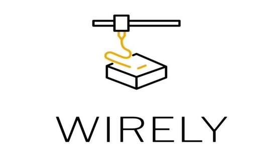

Feb 2024 - Present
In our ongoing undergraduate research, we are designing and developing QLAUN,
a modular, cost-effective, robust, and agile quadruped robot. Built for research purposes,
QLAUN fills the gap in affordable, research-grade quadrupeds in Lebanon and the MENA region.
The robot is fully 3D-printed with 12 Degrees of Freedom (DoF) and designed to achieve
a payload-to-weight ratio of over unity. QLAUN is modular, with easily interchangeable parts
and legs, allowing researchers to customize and experiment with the design.
We focused on optimizing energy efficiency and power management strategies for various
gaits to extend operational longevity. Our team developed a novel leg architecture to improve
mobility, enhancing the robot’s agility and robustness.
Simulations in ROS, using RViz and Gazebo, along with the integration of the CHAMP framework,
allowed us to extract real-time data for advanced locomotion and power management. This data,
including torque and current measurements, enabled the development of optimization functions
that enhance performance and energy efficiency.

WIRELY revolutionizes circuit printing by integrating 3D printing with conductive PLA
and real-time correction. The system dynamically adjusts printing parameters based on
a deep learning model, optimizing quality and reducing defects. With a digital twin for
real-time monitoring and two-way communication, WIRELY supports flexible, high-precision
thermoformed circuit boards. Combining innovation, automation, and sustainability, WIRELY
leads the future of additive manufacturing.
GRID (Ground and Aerial Integrated Deployment) is a rescue system integrating an unmanned ground
vehicle (UGV) and aerial vehicle (UAV) for search and rescue missions. The UAV captures images,
segmented by UNET, while the UGV follows an optimal path using A*. It navigates obstacles autonomously,
ensuring a safe route. Equipped with a thermal camera, GRID detects individuals and relays data,
supported by strong radio communication for seamless operation in difficult conditions.
As part of a team, we developed an autonomous robot for cleaning solar panels,
focusing on navigation and control through advanced pathfinding algorithms,
real-world simulations, and hardware integration. Built with Python, C++, and ROS,
the project involved simulators, sensor fusion, and firmware development to optimize
performance. This initiative demonstrated our ability to integrate complex systems and
adapt solutions for large-scale applications.
We designed and developed a highly efficient semi-automatic sanitary pad machine for an
NGO in Lebanon, managing key elements like actuation, sensing, and PLC programming.
This project applied our theoretical knowledge to a real-world problem, showcasing its
impact at the VIP+ Industry-Academia Day. Our work aimed to improve accessibility to
essential products and demonstrated our capability to innovate and collaborate effectively.

In this project, we delved into sustainable energy and explored Gravity Batteries,
a novel method of energy storage based on a simple mechanical principle used for decades.
After conducting extensive research, we simulated the concept in SolidWorks and MATLAB, applying our knowledge of gears, chains,
and belts. Additionally, we assembled a proof of
concept that successfully demonstrated the ability to store energy and light up a bulb through
the conversion of gravitational potential energy.
In this project, I brought together my passion for robotics and magic to create Naboul,
a robot that performs three magic tricks. Equipped with speech recognition,
Naboul listens, speaks, and interacts with the audience. We built him entirely from scratch,
from designing the structure to engineering the magic mechanisms, using materials like cardboard,
wood, and metal hinges. The tricks are executed through the integration of sensors and actuators,
delivering a captivating and interactive experience.